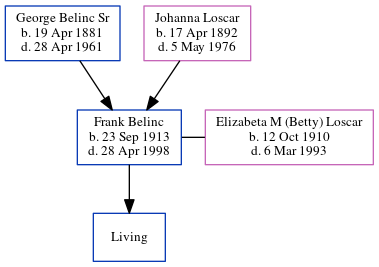

Frank Belinc 1913 - 1998
[ Home ] | [ Calendar ] | [ Surnames Index ] | [ Census Index ] | [ Family History ]The child of George Belinc Sr and Johanna Loscar, Frank Belinc, the first cousin once-removed on the mother's side of Michele Copp (née Phillips), was born in Essen, Germany on Sep 23, 1913 and. He married his aunt Elizabeta M (Betty) Loscar (with whom he had 1 surviving child, Michael Frank) in 1951 (Elizabeth (divorced) married or pretended to marry her nephew Frank (son of her sister Johanna). They lived in Pennsylvania and had a son Michael in addition to her two children from her first marriage).
During his life, he was living in Pittsburgh (Districts 251-488), Pittsburgh, Allegheny, Pennsylvania, USA in 19302; in Davis, Tucker, West Virginia, USA in 19403; in West Virginia before 19514; in Saint Thomas, Pennsylvania, USA5; and in St. Thomas6. he arrived in 1904.
He died on Apr 28, 1998 in St Thomas PA and was buried in St Thomas Township, Franklin County, Pennsylvania after Apr 28, 19981.
Parents
- George Anthony Sr was born on Apr 19, 1881
- Johanna A. was born on Apr 17, 1892
Citations
- Pennsylvania, U.S., Veterans Burial Cards, 1777-2012 Ancestry.com Operations, Inc. ( Pennsylvania Veterans Burial Cards, 1777–2012. Digital Images, 3–5. Pennsylvania Historical and Museum Commission, Bureau of Archives and History. Harrisburg, Pennsylvania.)
- 1930 United States Federal Census Online publication - Provo, UT, USA: MyFamily.com, Inc., 2002.Original data - United States of America, Bureau of the Census. Fifteenth Census of the United States, 1930. Washington, D.C.: National Archives and Records Administration, 1930. T626, 2,667 rol
- U.S., World War II Draft Cards Young Men, 1940-1947 Ancestry.com Operations, Inc. ( View Sources.)
- Social Security Death Index Online publication - Provo, UT, USA: MyFamily.com, Inc., 2006.Original data - Social Security Administration. Social Security Death Index, Master File. Social Security Administration.Original data: Social Security Administration. Social Security Death Inde
- U.S., Public Records Index, 1950-1993, Volume 2 Ancestry.com Operations, Inc. (Voter Registration Lists, Public Record Filings, Historical Residential Records, and Other Household Database Listings.)
- Newspapers.com Obituary Index, 1800s-current Ancestry.com Operations Inc
Family Tree
Generated by ged2site. Last updated on Jun 6, 2024